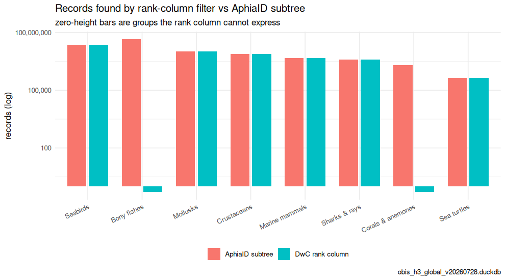
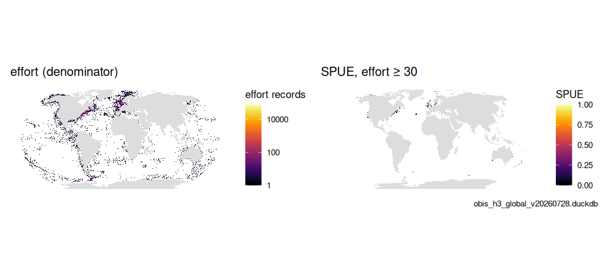
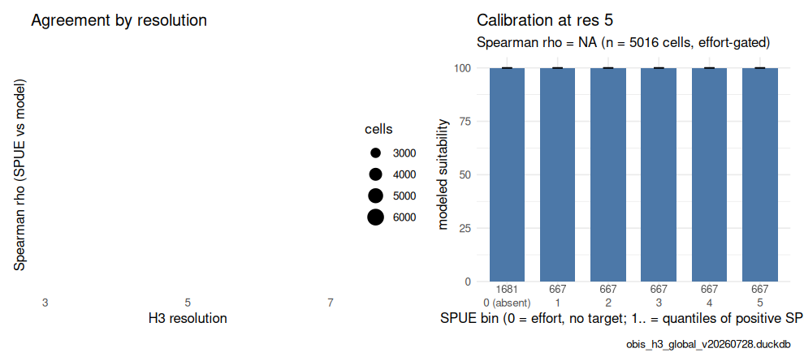
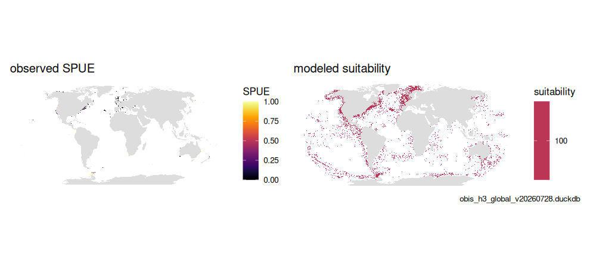

Children taxa & an effort proxy (SPUE) from the OBIS snapshot
Source:vignettes/articles/taxon_children.Rmd
taxon_children.RmdThis article shows how to filter OBIS by any WoRMS taxon, at any rank, using only the local OBIS snapshot — no calls to the (heavy) OBIS web services — and how to turn a higher-order taxon into an observation-effort proxy for a presence-only sightings-per-unit-effort (SPUE) indicator. Along the way it produces Table 3 and Figure 4 of the OBIS → H3 → EOV manuscript.
It builds on vignette("h3t"): the
same occ_h3 species-level store, plus a baked
taxon table (the WoRMS taxonomy) that lets
us resolve the descendants of an arbitrary AphiaID.
Why a taxon table?
occ_h3 carries only the six Darwin Core rank columns
(phylum … species) plus the species-level
aphiaid. That is enough to filter on, say,
class = "Aves", but not on a rank that
isn’t a column — e.g. Infraorder Cetacea, or an arbitrary clade
referenced only by its AphiaID. To support those we walk the full WoRMS
hierarchy:
-
build_taxon_parquet.RextractstaxonID(= AphiaID),parentNameUsageID,acceptedNameUsageID,scientificName,taxonRankfrom a WoRMS DarwinCoretaxon.txtinto a compacttaxon.parquet. -
migrate_add_taxon.Rbakes that intoobis_h3.duckdb(indexed onparentNameUsageID), alongsideocc_h3/idx_h3. The bulk WoRMS download is not a complete cover of the AphiaIDs OBIS carries, soobis_taxon_fill_gaps()closes the gap from the WoRMS REST API (seevignette("eov")).
library(obisindicators)
library(dplyr)
library(ggplot2)
con <- obis_store_connect() # the store named by OBIS_H3_DUCKDBPrecomputed. The store is not available where this documentation is built, so the database chunks below were run locally by
data-raw/precompute_articles.Rand their output committed (the tile maps are live). This render used obis_h3_global_v20260728.duckdb, the global store.
Resolve the children of a taxon
obis_taxon_children() returns the seed taxon plus every
descendant, at any rank, via a recursive walk of
parentNameUsageID. On the full WoRMS table (~1.5 M rows)
this resolves in a fraction of a second.
# Infraorder Cetacea = AphiaID 2688 (a rank that is NOT an occ_h3 column)
cet <- obis_taxon_children(2688, con)
nrow(cet) # descendant taxa
#> [1] 1665
sort(table(cet$taxonRank), decreasing = TRUE)
#>
#> Species Genus Subspecies Family Subfamily Subgenus
#> 1165 231 152 50 29 26
#> Superfamily Infraorder Variety
#> 10 1 1
# class Bacillariophyceae (diatoms) = 148899: a much broader subtree
dia <- obis_taxon_children(148899, con)
nrow(dia)
#> [1] 71531The descendant AphiaIDs (cet$taxonID) are exactly the
set used to filter occ_h3.aphiaid.
obis_taxon_subtree_sql() returns that resolution as a
standalone read-only SELECT, handy for the API.
Rank columns vs. subtrees (Table 3)
Why not just filter on the Darwin Core rank columns? Because the rank
a name occupies is not stable across taxonomies. A user who filters
class = 'Actinopterygii' gets nothing: WoRMS files
Actinopterygii as a gigaclass and OBIS’s class column
carries Teleostei. class = 'Anthozoa' likewise returns zero
(a subphylum in WoRMS; OBIS uses Hexacorallia / Octocorallia). The
AphiaID subtree is rank-agnostic and immune to this.
calc_rank_vs_subtree() counts each preset group both ways
on the base resolution tier of occ_h3.
rv <- calc_rank_vs_subtree(con)
knitr::kable(
rv |> mutate(across(c(records_rank, records_tree), ~ format(.x, big.mark = ",")),
ratio = round(ratio, 3)),
caption = "Records by Darwin Core rank-column filter vs. AphiaID subtree")| label | rank | name | aphiaid | records_rank | species_rank | records_tree | species_tree | ratio |
|---|---|---|---|---|---|---|---|---|
| Seabirds | class | Aves | 1836 | 23,686,770 | 889 | 23,744,889 | 891 | 0.998 |
| Bony fishes | class | Actinopterygii | 10194 | 0 | 0 | 45,130,960 | 16477 | 0.000 |
| Sharks & rays | class | Elasmobranchii | 10193 | 4,001,773 | 1144 | 4,002,304 | 1145 | 1.000 |
| Marine mammals | class | Mammalia | 1837 | 4,866,582 | 170 | 4,866,582 | 170 | 1.000 |
| Sea turtles | order | Testudines | 2689 | 447,735 | 22 | 447,743 | 22 | 1.000 |
| Corals & anemones | class | Anthozoa | 1292 | 0 | 0 | 1,999,366 | 6258 | 0.000 |
| Mollusks | phylum | Mollusca | 51 | 10,733,645 | 34064 | 10,739,769 | 34079 | 0.999 |
| Crustaceans | class | Malacostraca | 1071 | 7,669,820 | 23968 | 7,670,453 | 23987 | 1.000 |
long <- bind_rows(
transmute(rv, label, method = "DwC rank column", records = records_rank),
transmute(rv, label, method = "AphiaID subtree", records = records_tree))
p <- ggplot(long, aes(x = reorder(label, -records), y = pmax(records, 0.5), fill = method)) +
geom_col(position = position_dodge(width = .8), width = .7) +
scale_y_log10(labels = scales::label_comma()) +
labs(x = NULL, y = "records (log)", fill = NULL,
title = "Records found by rank-column filter vs AphiaID subtree",
subtitle = "zero-height bars are groups the rank column cannot express",
caption = store_label) +
theme_minimal(base_size = 11) +
theme(legend.position = "bottom", axis.text.x = element_text(angle = 25, hjust = 1))
p
plot of chunk fig-table3
Map a taxon’s records (any rank)
obis_h3t_sql(aphiaid = ...) builds a served tile query
that filters occ_h3 to the subtree via a recursive CTE (the
h3t validator permits WITH RECURSIVE).
obis_h3t_url() base64-encodes it into a tile URL.
sql <- obis_h3t_sql(indicator = "n", aphiaid = 2688) # # records, all Cetacea
cat(sql)
#> WITH RECURSIVE taxon_tree AS (
#> SELECT taxonID, parentNameUsageID
#> FROM taxon
#> WHERE taxonID IN (2688)
#> UNION ALL
#> SELECT t.taxonID, t.parentNameUsageID
#> FROM taxon t
#> JOIN taxon_tree tt ON t.parentNameUsageID = tt.taxonID
#> WHERE t.parentNameUsageID IS NOT NULL), src AS (
#> SELECT CAST(h3_cell_to_parent(cell_id, LEAST({{res}}, 7)) AS BIGINT) AS cell_id,
#> species, SUM(records) AS ni
#> FROM occ_h3
#> WHERE res = CASE WHEN LEAST({{res}}, 7) <= 3 THEN 3 WHEN LEAST({{res}}, 7) <= 5 THEN 5 ELSE 7 END
#> AND aphiaid IN (SELECT taxonID FROM taxon_tree)
#> GROUP BY 1, 2)
#> SELECT cell_id, SUM(ni) AS value, SUM(ni) AS n FROM src GROUP BY cell_id
url <- obis_h3t_url(
base_url = "h3tiles://h3t.marinesensitivity.org/h3t/{z}/{x}/{y}.h3t",
sql = sql)The map below is served live from the deployed tile service (global store):
## Warning: replacing previous import 'h3::compact' by 'purrr::compact' when
## loading 'obisindicators'
library(mapgl)
url <- obis_h3t_url(
base_url = "h3tiles://h3t.marinesensitivity.org/h3t/{z}/{x}/{y}.h3t",
sql = obis_h3t_sql(indicator = "n", aphiaid = 2688))
maplibre(center = c(-40, 20), zoom = 1.5) |>
add_h3t_source(id = "cet", tiles = url) |>
add_fill_layer(
id = "cet_fill", source = "cet", source_layer = "cet",
fill_color = interpolate(
column = "value", values = c(1, 1000),
stops = c("#3b528b", "#5ec962")))An effort proxy: sightings per unit effort (SPUE)
A raw record map conflates abundance with observation effort — a hexagon lights up both where a species is common and where people looked hard. When records come from multi-species surveys, a higher-order taxon gives a presence-only proxy for that effort: within the footprint of, say, all Cetacea (the surveys that could have recorded any whale/dolphin), what fraction of records are the target species?
obis_spue_sql() builds this as a served tile query (two
recursive subtrees: numerator = target, denominator = effort).
calc_spue() is the pinned R reference (see
test-spue-parity.R), and calc_spue_cells()
returns the same per-cell table from a store at a fixed resolution.
# target: Tursiops truncatus (common bottlenose dolphin) = 137111
# effort: Infraorder Cetacea = 2688 (its multi-species-survey footprint)
spue_sql <- obis_spue_sql(num_aphiaid = 137111, den_aphiaid = 2688)
cat(spue_sql)
#> WITH RECURSIVE num_tree AS (
#> SELECT taxonID, parentNameUsageID
#> FROM taxon
#> WHERE taxonID IN (137111)
#> UNION ALL
#> SELECT t.taxonID, t.parentNameUsageID
#> FROM taxon t
#> JOIN num_tree tt ON t.parentNameUsageID = tt.taxonID
#> WHERE t.parentNameUsageID IS NOT NULL),
#> den_tree AS (
#> SELECT taxonID, parentNameUsageID
#> FROM taxon
#> WHERE taxonID IN (2688)
#> UNION ALL
#> SELECT t.taxonID, t.parentNameUsageID
#> FROM taxon t
#> JOIN den_tree tt ON t.parentNameUsageID = tt.taxonID
#> WHERE t.parentNameUsageID IS NOT NULL),
#> src AS (
#> SELECT CAST(h3_cell_to_parent(cell_id, LEAST({{res}}, 7)) AS BIGINT) AS cell_id,
#> -- COALESCE so an effort cell lacking the target reads 0, not NULL
#> -- (matches calc_spue(): sum of no records is 0). presence-only:
#> -- the target was absent *despite* effort here.
#> COALESCE(SUM(records) FILTER (WHERE aphiaid IN (SELECT taxonID FROM num_tree)), 0) AS n_num,
#> SUM(records) AS n_den
#> FROM occ_h3
#> WHERE res = CASE WHEN LEAST({{res}}, 7) <= 3 THEN 3 WHEN LEAST({{res}}, 7) <= 5 THEN 5 ELSE 7 END
#> AND aphiaid IN (SELECT taxonID FROM den_tree)
#> GROUP BY 1)
#> SELECT cell_id,
#> n_num::DOUBLE / NULLIF(n_den, 0) AS value,
#> n_den AS n
#> FROM src
library(obisindicators)
library(mapgl)
spue_url <- obis_h3t_url(
base_url = "h3tiles://h3t.marinesensitivity.org/h3t/{z}/{x}/{y}.h3t",
sql = obis_spue_sql(num_aphiaid = 137111, den_aphiaid = 2688))
maplibre(center = c(-40, 20), zoom = 1.5) |>
add_h3t_source(id = "spue", tiles = spue_url) |>
add_fill_layer(
id = "spue_fill", source = "spue", source_layer = "spue",
fill_color = interpolate(
column = "value", values = c(0, 1),
stops = c("#440154", "#fde725")))The tooltip n carries the effort count
(denominator): a bright cell backed by a large n is a
robust SPUE; a bright cell over n = 3 is noise. Choosing
the effort taxon is the analyst’s call — the parent class or order is a
sensible default, but a survey-defined group (e.g. Cetacea, seabirds) is
often better. See vignette("scaling") for how the
denominator’s sparsity behaves across H3 resolutions.
SPUE on a map, and against a species distribution model (Fig. 4)
Humpback whale (Megaptera novaeangliae, AphiaID 137092) over
all Cetacea. The effort map is the denominator; the SPUE map is masked
to cells with at least min_eff effort records.
num_id <- as.integer(Sys.getenv("SPUE_NUM", "137092"))
den_id <- as.integer(strsplit(Sys.getenv("SPUE_DEN", "2688"), ",")[[1]])
min_eff <- as.integer(Sys.getenv("SPUE_MIN_EFFORT", "30"))
sp5 <- calc_spue_cells(con, num_id, den_id, res = 5)
p1 <- gmap_cells(sp5, "effort", label = "effort records", trans = "log10") +
labs(title = "effort (denominator)")
p2 <- gmap_cells(sp5, "spue", label = "SPUE", mask = sp5$effort >= min_eff) +
labs(title = sprintf("SPUE, effort ≥ %d", min_eff))
p <- patchwork::wrap_plots(p1, p2, ncol = 2) + patchwork::plot_annotation(caption = store_label)
p
plot of chunk fig4a
Is presence-only SPUE telling us anything about habitat? Compare it
with an independent modeled suitability surface for the same species: a
GeoTIFF named by SDM_TIF (here the MarineSensitivity merged
AquaMaps/expert-range model). h3_raster_to_cells()
aggregates the raster to the same H3 cells and
compare_spue_sdm() reports an effort-gated Spearman
correlation plus calibration bins, at each resolution.
sdm_tif <- Sys.getenv("SDM_TIF")
has_sdm <- nzchar(sdm_tif) && file.exists(sdm_tif)
if (!has_sdm) message("set SDM_TIF to run the comparison; skipped")
r <- terra::rast(sdm_tif)
# crop to the effort footprint (a global 0.05-degree raster is 26M pixels)
bb <- sf::st_bbox(hex_sf(sp5$cell))
r <- terra::crop(r, terra::ext(bb[["xmin"]] - 1, bb[["xmax"]] + 1, bb[["ymin"]] - 1, bb[["ymax"]] + 1))
res_set <- c(3L, 5L, 7L)
runs <- lapply(res_set, function(rs) {
spue <- calc_spue_cells(con, num_id, den_id, res = rs)
sdm <- h3_raster_to_cells(r, rs, cells = spue$cell)
list(res = rs, cmp = compare_spue_sdm(spue, sdm, min_effort = min_eff, n_bins = 5L))
})
stats <- bind_rows(lapply(runs, function(x) cbind(res = x$res, x$cmp$stats)))
knitr::kable(stats |> mutate(across(where(is.numeric), ~ signif(.x, 3))),
caption = "SPUE vs. modeled suitability by resolution")| res | n_cells | rho | p_value | frac_present |
|---|---|---|---|---|
| 3 | 2140 | NA | NA | 0.761 |
| 5 | 5020 | NA | NA | 0.665 |
| 7 | 6580 | NA | NA | 0.511 |
p_rho <- ggplot(stats, aes(x = res, y = rho)) + geom_line() + geom_point(aes(size = n_cells)) +
scale_x_continuous(breaks = res_set) +
labs(x = "H3 resolution", y = "Spearman rho (SPUE vs model)", size = "cells",
title = "Agreement by resolution") + theme_minimal(base_size = 11)
p_cal <- plot_spue_sdm(runs[[2]]$cmp) + labs(title = "Calibration at res 5")
p <- patchwork::wrap_plots(p_rho, p_cal, ncol = 2) + patchwork::plot_annotation(caption = store_label)
p
plot of chunk fig4b
sdm5 <- h3_raster_to_cells(r, 5, cells = sp5$cell)
p2 <- patchwork::wrap_plots(
gmap_cells(sp5, "spue", label = "SPUE", mask = sp5$effort >= min_eff) + labs(title = "observed SPUE"),
gmap_cells(sdm5, "value", label = "suitability") + labs(title = "modeled suitability"),
ncol = 2) + patchwork::plot_annotation(caption = store_label)
p2
plot of chunk fig4c
On a regional demo store the effort-gated cell count is small and
agreement is weak; the point of the comparison is the method —
the same effort gate that makes SPUE trustworthy also decides how many
cells can be compared at all, and that number falls with resolution (see
vignette("scaling")).
DBI::dbDisconnect(con, shutdown = TRUE)